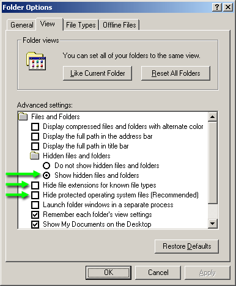
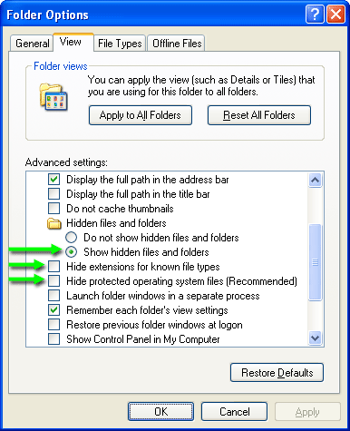

Show Hidden Files, Folders, And File Extensions In Windows 2000/XP
Version: Default* | Print Friendly With Images* | Print Friendly Without Images*
For: Windows 2000 Professional | Windows XP (32)
Last Reviewed/Updated: 06 Apr 2020 | Published: 24 Apr 2007 | Status: Active
- 1. Introduction
- 1.1. Abbreviations
- 2. Show Hidden Files, Folders, And File Extensions In Windows 2000/XP
- 2.1. Show Hidden Files, Folders, And File Extensions In Windows 2000
- 2.2. Show Hidden Files, Folders, And File Extensions In Windows XP
1. Introduction
By default, Windows 2000 Professional and Windows XP (Windows 2000/XP) hides particular files, folders, and file extensions from appearing in My Computer and Windows Explorer. This is to prevent the user from tampering with files and folders required for the proper functioning of the system. Some advanced tasks, however, require access to the hidden files, folders, and file extensions. This Web page describes how to show the hidden files, folders, and file extensions in Windows 2000/XP.
i
By default, Windows 95, Windows 98, and Windows ME (Windows 9x/ME) also hide particular files, folders, and file extensions from appearing in My Computer and Windows Explorer. Perform similar to access the hidden files, folders, and file extensions in Windows 9x/ME.
1.1. Abbreviations
- 9x = Windows 95 and Windows 98 Second Edition.
- 98 = Windows 98 = Windows 98 Second Edition.
- ME = Windows ME = Windows Millennium Edition.
- 2000 = 2000 Pro = Windows 2000 Pro = Windows 2000 Professional.
2. Show Hidden Files, Folders, And File Extensions In Windows 2000/XP
2.1. Show Hidden Files, Folders, And File Extensions In Windows 2000
- Open My Computer or Windows Explorer and click Tools | Folder Options | View.
- In Advanced settings:
- Select Show hidden files and folders.
- Uncheck Hide file extensions for known file types.
- Uncheck Hide protected operating system files (Recommended). The Are you sure you want to display these files dialog appears. Click Yes.

- Click OK.
2.2. Show Hidden Files, Folders, And File Extensions In Windows XP
- Open My Computer or Windows Explorer and click Tools | Folder Options | View.
- In Advanced settings:
- Select Show hidden files and folders.
- Uncheck Hide extensions for known file types.
- Uncheck Hide protected operating system files (Recommended). The Are you sure you want to display these files dialog appears. Click Yes.

- Click OK.